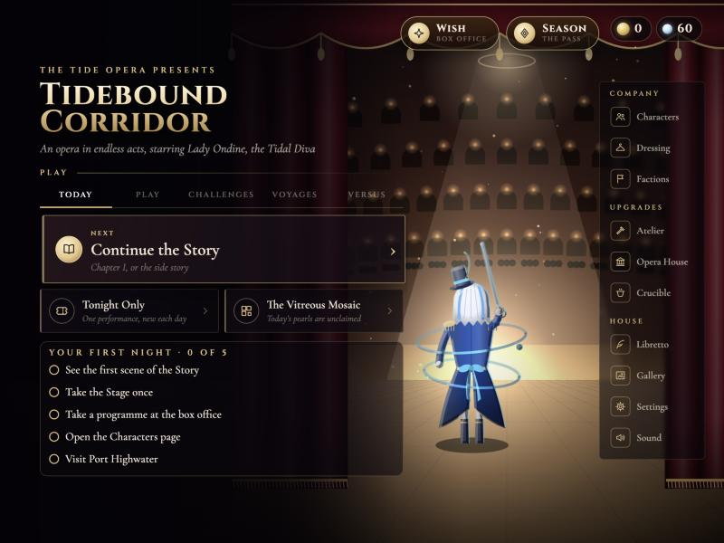
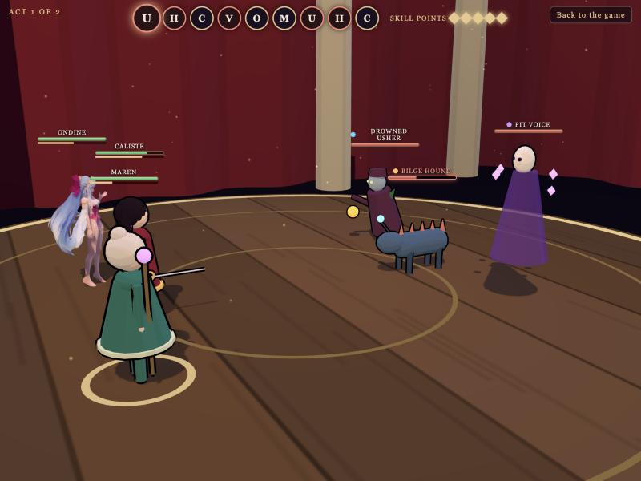
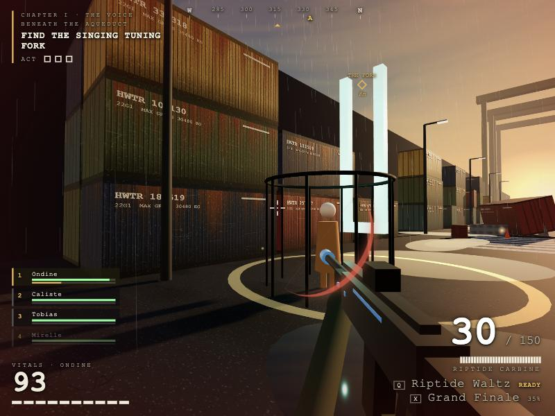

The Tide Opera presents
Choose a performance
Three ways to play, in your browser. No install.

The full game
Tidebound Corridor
An opera in endless acts: a story, an endless corridor, a drowned harbour to rebuild, wishes, and a local two-player Rival Stage.
Play
Prototype
The Drowned Stage
A taste of a 3D, turn-based version: cinematic skill cameras, weaknesses, and a rigged character with a real attack animation.
Play
New · First-person war · Desktop
The Drowned Front
The opera company goes to war. Lead Ondine, Caliste, Tobias and Mirelle with their own guns, skills and ultimates against the drowned, from the Tuning Fork to the Abyssal Warden.
Play